STATUS
active research
A five-link, four-actuator planar bipedal robot on a boom-constrained walking rig, designed and built for my MSc dissertation at Bournemouth University and continued as grant-funded research after graduation. Custom 3D-printed mechanics, ODrive S1 actuation over CAN, a ROS 2 Jazzy software stack written from scratch, and walking gaits generated by trajectory optimisation on the robot's full dynamic model.
PiB is a planar bipedal robot constrained to move in a vertical plane by a boom that pivots around a central mast. It extends a single-leg design from Prof. Alexander Badri-Spröwitz's group (Mo et al., Scientific Reports, 2023) into a complete five-link, four-actuator robot, with eleven documented design changes along the way.
Its architecture matches the canonical RABBIT platform from the academic literature: a point-foot, underactuated biped, the platform on which Hybrid Zero Dynamics (HZD) was first developed and validated. Matching that mechanical lineage keeps that body of control theory within reach, even though the current approach is model-based trajectory optimisation (see Control Strategy below).
Each leg has 2 actuated degrees of freedom: hip (swing, X-axis, ±90°) and knee (bend, X-axis, −8.9° to +43.3°), both rotating about the boom's sagittal axis. A passive parallelogram 4-bar linkage keeps the foot parallel to the ground through the full knee range with no extra actuator: as the knee bends, a loop-closure constraint on the parallel rod cancels the rotation automatically.
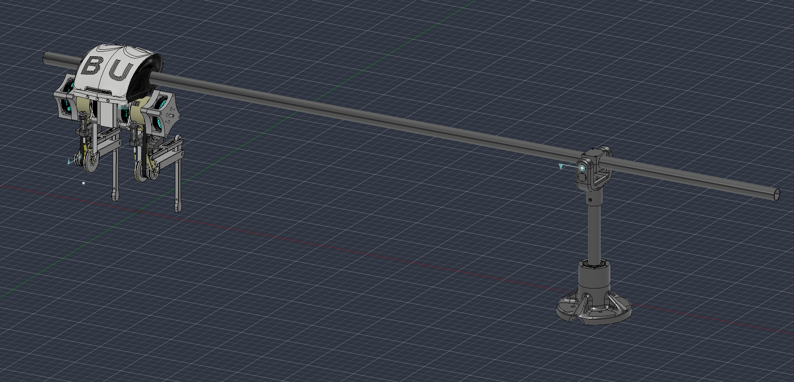
The structure is 3D printed; the drive parts are steel, bought in and modified in-house after metal printing and EDM both proved impractical for them. The torso houses the hip motors and central electronics, and the most recent revision reworks the outer shell for a cleaner cable path and a stiffer motor mount interface. Motor placement at the knee is proximal (motor body near the hip) to reduce the leg's distal inertia and keep the mass distribution favourable for swing dynamics, a decision informed directly by the RABBIT literature.
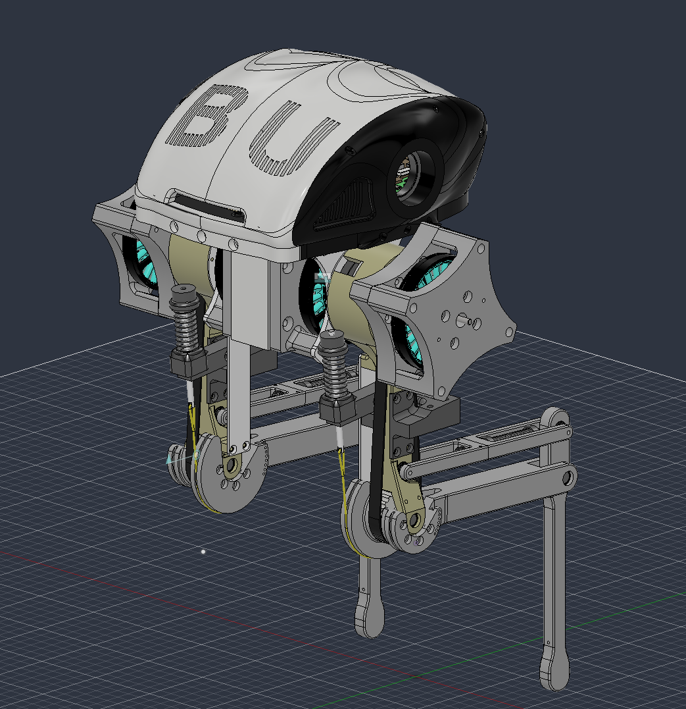
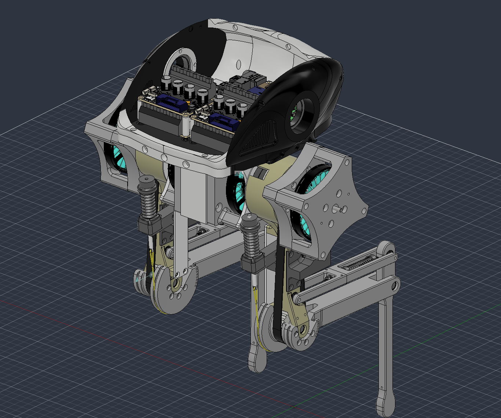
Physical parameters, measured from the current build:
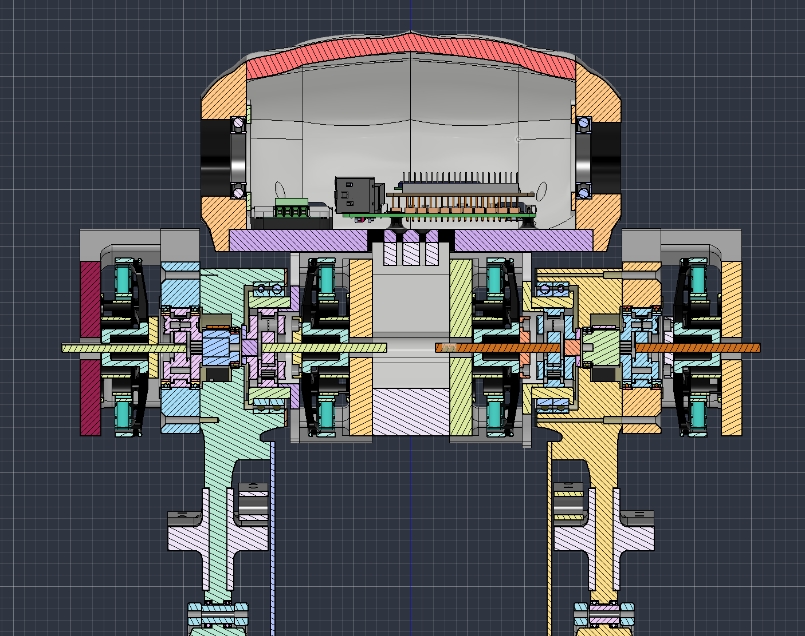
Each of the four joints is driven by its own single-axis ODrive S1 controller, addressed by CAN node_id (0–3) over one shared bus at 1 Mbps. Motors are T-Motor MN7005-32 KV115 units (24N28P → 14 pole pairs). Joint position comes from CUI AMT21 absolute RS-485 encoders, which keep the true physical position across power cycles once a one-time software zero calibration has been run, and load cells read through HX711 amplifiers provide force sensing. Everything is commanded from ROS 2 Jazzy on a Linux PC, so all four joints are driven and logged in sync.
The vendored odrive_ros2_control driver declares a gear_ratio parameter in the URDF's <ros2_control> block, but silently never applies it: it treats the position command/state interface as raw motor-shaft radians, 1:1. Sent straight through, any joint-space angle moves the real joint by only 1/gear_ratio of what was intended.
Rather than patch the vendored C++ driver, the fix lives in one place in Python: gear_ratios.py converts joint angle ↔ motor-shaft radians for every node that talks to real hardware, gated by a use_motors flag. A read-side counterpart, joint_state_corrector.py, republishes a gear-ratio-corrected /joint_states_corrected topic so RViz shows real joint angles instead of raw motor-shaft values. The knee gear ratio was determined empirically through hardware testing: 7.353 → 8.667 → 8.333, with the negative sign (direction reversal) also discovered by testing against the physical leg.
The ROS 2 workspace was built from scratch and is split into packages: biped_description (URDF with parallelogram-linkage constraints, SDF, worlds, launch files, ros2_control config), biped_control (IK, calibration, gear-ratio handling), foot_trajectory_planner (Bézier library and the interactive gait designer GUI), biped_gait_generation (bipedal gait coordinator), and ros_odrive (vendored ODrive driver). One ros2_control interface is shared by Gazebo and the hardware, so the same controller code runs on both.
Simulation runs on Gazebo Harmonic with the Bullet physics engine, a deliberate choice over the default DART engine, which rejects closed kinematic loops entirely. Bullet handles the parallelogram as a constraint between two already-parented rigid bodies, making true four-bar loop closure possible in simulation. The SDF model (biped.sdf) is hand-authored rather than auto-generated, to use correct Harmonic material conventions and guarantee the plugin placement order. The model has 19 joints (9 fixed structural + 10 revolute), including par_lower_joint, a direct revolute from the par-link to the foot that closes the four-bar loop physically rather than through a software mimic.
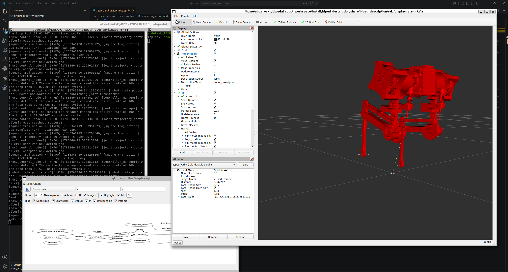
Model-based work uses Pinocchio 4.0 for inverse dynamics. A gravity profiler (gravity_profile.py) loads the designer's control points, reconstructs the full stance + swing Bézier trajectory through the same IK functions used on hardware, enforces the parallelogram constraints in joint space, and computes G(q) at every sample along the gait cycle.
A full RNEA pass (replay_trajectory.py) extends this to complete inverse-dynamics torques (inertial, Coriolis and gravity), overlaid on the gravity-only baseline. Pinocchio is also the reference the trajectory optimiser's dynamic model is verified against.
The leg is a 3R planar arm with a parallelogram constraint (θankle = −θknee), which collapses to an equivalent closed-form 2R problem, solved analytically:
cos(φ2) = (py² + pz² − L1² − L2²) / (2·L1·L2)
θhip = atan2(py, −pz) − atan2(L2sinφ2, L1+L2cosφ2)
solve_ik() raises an exception for any target outside joint limits or physical reach: the core safety net relied on by every node that builds a trajectory.
Parametric Bézier gaits. Foot trajectories are Bézier curves in foot space, shaped in a purpose-built designer GUI with live RViz markers and step-height constraints. Gait nodes load the saved control points at runtime, sample the curve at 250 Hz, run IK at each sample, and stream joint angles to the trajectory controllers through ROS 2 action goals.
Characterised on hardware, compliant position gains gave about 0.6 Hz of tracking bandwidth, against the 5–10 Hz a swing phase needs. That gap made the case for model-based torque feedforward.
Trajectory-optimised gaits. Walking gaits are now generated by trajectory optimisation on the robot's full dynamic model. The gait is posed as a constrained optimal-control problem, with soft touchdown, smooth weight transfer, friction and motor limits as constraints and an objective that minimises energy and landing impact, transcribed in CasADi and solved with IPOPT. The solution supplies feedforward torques for the joint control loops. The dynamic model was verified against Pinocchio, the gaits validated in simulation, and the first trials run on the robot.
What's built and validated:
ros2_control interface with the hardwareWalking trials have isolated five specific mechanical faults, each with a planned fix, and foot slip is now the limiting factor. What's next:
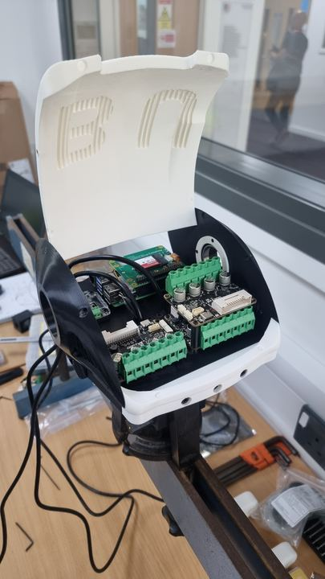
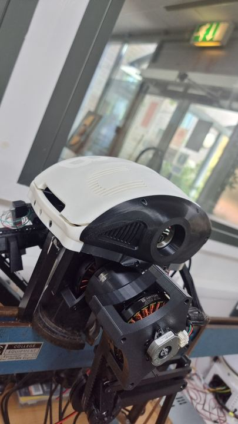
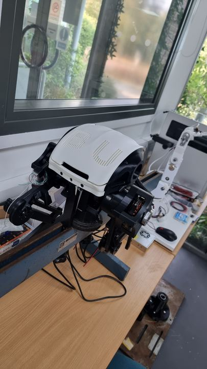
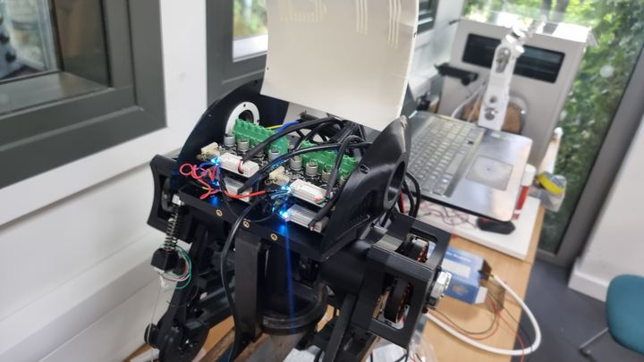
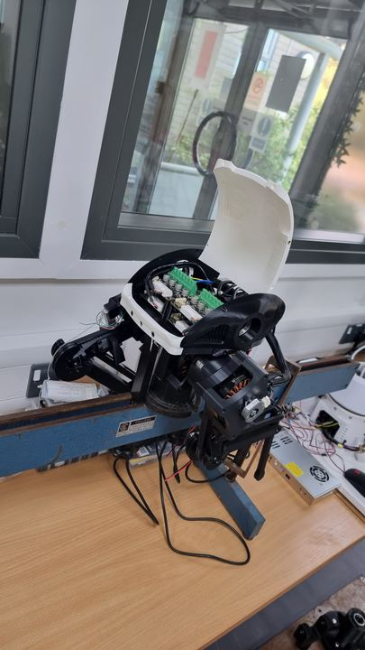
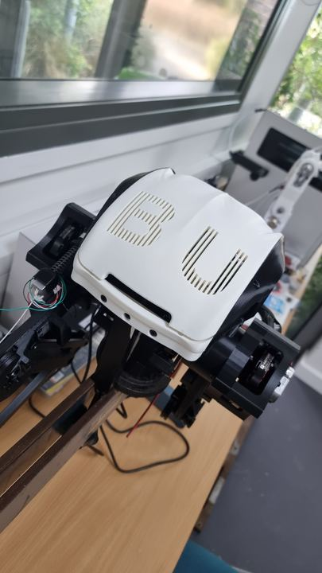
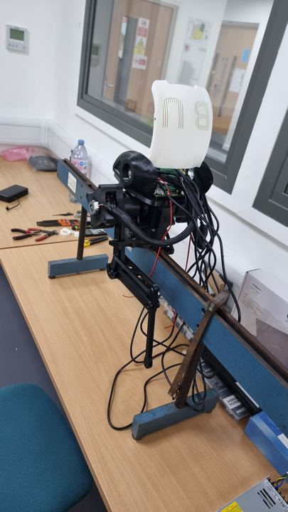
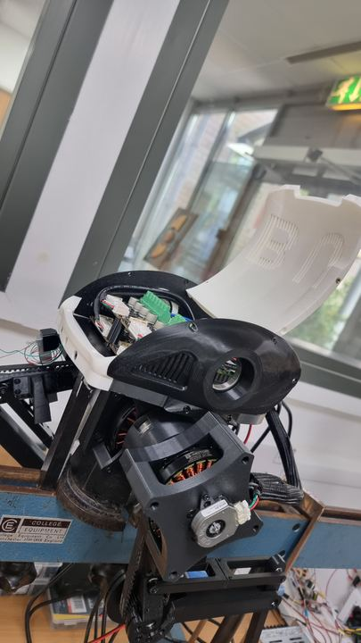